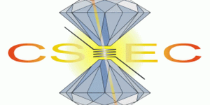

|
 |
Mikhail A. Kuzovnikov | ||||
| About | Publications | |||
1. Giant tunneling effect of hydrogen in high-pressure α–Mn hydride
M.A. Kuzovnikov
Proceedings of the «Physics of Extreme States of Matter – 2007», ICP RAS, Chernogolovka, p.40–42 (2007) {in Russian}
PDF(208Kb)
2. Hydrogen solubility in butadiene rubber under high pressure up to 75 kbar
M.A. Kuzovnikov, P. Albers, V.E. Antonov, M.K. Sakharov, M. Tkacz
Proceedings of the «Physics of Extreme States of Matter – 2008», ICP RAS, Chernogolovka, p.79–80 (2008) {in Russian}
PDF(235Kb)
3. Vibrational spectrum of alpha-manganese hydride in the regime of hydrogen tunneling
M.A. Kuzovnikov
Proceedings of 51th MIPT scientific conference «Modern problems of fundamental and applied sciences»: Part II. General and applied physics, MIPT, Dolgoprudnyi, p.158-161 (2008) {in Russian}
PDF(211Kb)
4. Vibrational properties of hydrogen impurity in high-pressure palladium deuteride
M.A. Kuzovnikov
Proceedings of the «Physics of Extreme States of Matter – 2009», ICP RAS, Chernogolovka, p.170-173 (2009)
PDF(179Kb)
5. Neutron spectroscopy of H impurities in PdD: Covibrations of the H and D atoms
V.E. Antonov, A.I. Davydov, V.K. Fedotov, A.S. Ivanov, A.I. Kolesnikov, M.A. Kuzovnikov
Phys. Rev. B 80, 134302 (2009)
PDF(796Kb)
6. New phase in the water–hydrogen system
V.S. Efimchenko, M.A. Kuzovnikov, V.K. Fedotov, M.K. Sakharov, S.V. Simonov, M. Tkacz
J. Alloys Compd. 509S, S860–S863 (2011)
PDF(433Kb)
7. Raman scattering study of α-MgH2 and γ-MgH2
M.A. Kuzovnikov, V.S. Efimchenko, E.V. Filatov, A.A. Maksimov, I.I. Tartakovskii, A.J. Ramirez-Cuesta
Solid State Commun. 154, 77–80 (2013)
PDF(429Kb)
8. Hydrogen solubility in amorphous silica at pressures up to 75 kbar
V.S. Efimchenko, V.K. Fedotov, M.A. Kuzovnikov, A.S. Zhuravlev, B.M. Bulychev
J. Phys. Chem. B 117, 422–425 (2013)
PDF(850Kb)
9. Neutron spectroscopy of nickel deuteride
V.E. Antonov, A.S. Ivanov, M.A. Kuzovnikov, M. Tkacz
J. Alloys Compd. 580, S109–S113 (2013)
PDF(619Kb)
10. Hydrogen Solubility in Cristobalite at High Pressure
V.S. Efimchenko, V.K. Fedotov, M.A. Kuzovnikov, K.P. Meletov, B.M. Bulychev
J. Phys. Chem. A 118, 10268–10272 (2014)
PDF(960Kb)
11. Hydrogen-assisted phase transition in a trihydride MgNi2H3 synthesized at high H2 pressures: Thermodynamics, crystallographic and electronic structures
V.A. Yartys, V.E. Antonov, A.I. Beskrovnyi, J.-C. Crivello, R.V. Denys, V.K. Fedotov, M. Gupta, V.I. Kulakov, M.A. Kuzovnikov, M. Latroche, Yu.G. Morozov, S.G. Sheverev, B.P. Tarasov
Acta Materialia 82, 316–327 (2015)
PDF(3145Kb)
12. High pressure studies of cobalt-hydrogen system by X-ray diffraction
M.A. Kuzovnikov, M. Tkacz
J. Alloys Compd. 650, 884–886 (2015)
PDF(649Kb)
13. Synthesis of ruthenium hydride
M.A. Kuzovnikov, M. Tkacz
Phys. Rev. B 93, 064103 (2016)
PDF(325Kb)
14. Pressure effect on hydrogen tunneling and vibrational spectrum in α-Mn
A.I. Kolesnikov, A. Podlesnyak, R.A. Sadykov, V.E. Antonov, M.A. Kuzovnikov, G. Ehlers, G.E. Granroth
Phys. Rev. B 94, 134301 (2016)
15. Nonstoichiometric molybdenum hydride
M.A. Kuzovnikov, H. Meng, M. Tkacz
J. Alloys Compd. 694, 51–54 (2017)
PDF(961Kb)
16. Dihydride formation in the palladium-rhodium alloys under high hydrogen pressure
M.A. Kuzovnikov, M. Tkacz
Int. J. Hydrogen Energy 42, 340-346 (2017)
PDF(1038Kb)
17. Pressure-induced metallization in Erbium trihydride
M.A. Kuzovnikov, M.I. Eremets, A.P. Drozdov, M. Tkacz
Solid State Commun. 263, 23–26 (2017)
PDF(1402Kb)
18. High-pressure synthesis of tantalum dihydride
M.A. Kuzovnikov, M. Tkacz, H. Meng, D.I. Kapustin, V.I. Kulakov
Phys. Rev. B 96, 134120 (2017)
PDF(681Kb)
19. Phase stability of some rare earth trihydrides under high pressure
H. Meng, M.A. Kuzovnikov, M. Tkacz
Int. J. Hydrogen Energy 42, 29344–29349 (2017)
PDF(1864Kb)
20. T-P-X phase diagram of the water-hydrogen system at pressures up to 10 kbar
M.A. Kuzovnikov, M. Tkacz
J. Phys. Chem C 123 [6] 3696–3702 (2019)
PDF(1208Kb)
21. Magnesium based materials for hydrogen based energy storage: Past, present and future
V.A. Yartys, M.V. Lototskyy, E. Akiba, R. Albert, V.E. Antonov, J.-R. Ares, M. Baricco, N. Bourgeois, C.E. Buckley, J.M. Bellosta von Colbe, J.-C. Crivello, F. Cuevas, R.V. Denys, M. Dornheim, M. Felderhoff, D.M. Grant, B.C. Hauback, T.D. Humphries, I. Jacob, T.R. Jensen, P.E. de Jongh, J.-M. Joubert, M.A. Kuzovnikov, M. Latroche, A. Montone, M. Paskevicius, L. Pasquini, L. Popilevsky, V.M. Skripnyuk, E. Rabkin, V. Sofianos, A. Stuart, G. Walker, Hui Wang, C.J. Webb, Min Zhu
Int. J. Hydrogen Energy 44 [15] 7809–7859 (2019)
PDF(7470Kb)
22. Superconductivity at 250 K in lanthanum hydride under high pressures
A.P. Drozdov, P.P. Kong, V.S. Minkov, S.P. Besedin, M.A. Kuzovnikov, S. Mozaffari, L. Balicas, F.F. Balakirev, D.E. Graf, V.B. Prakapenka, E. Greenberg, D.A. Knyazev, M. Tkacz, M.I. Eremets
Nature 569, 528–531 (2019)
PDF(4426Kb) DOCXsuppl (6318Kb)
23. Solubility of deuterium and hydrogen in fcc iron at high pressures and temperatures
V.E. Antonov, V.M. Gurev, V.I. Kulakov, M.A. Kuzovnikov, I.A. Sholin, V.Y. Zuykova
Phys. Rev. Materials 3, 113604 (2019)
24. High-pressure synthesis of novel polyhydrides of Zr and Hf with a Th4H15-type structure
M.A. Kuzovnikov, M. Tkacz
J. Phys. Chem. C 123, 30059–30066 (2019)
25. Neutron scattering study of tantalum dihydride
M.A. Kuzovnikov, V.E. Antonov, A.S. Ivanov, T. Hansen, S. Savvin, V.I. Kulakov, M. Tkacz, A.I. Kolesnikov, V.M. Gurev
Phys. Rev. B 102, 024113 (2020)
PDF(862Kb)
26. Synthesis of osmium hydride under high hydrogen pressure
M.A. Kuzovnikov, V.S. Minkov, S. Chariton, V.B. Prakapenka, M.I. Eremets
Phys. Rev. B 102, 214109 (2020)
PDF(1214Kb)
27. High-pressure phase transition of AB3-type compounds: case of tellurium trioxide
D. Kurzydłowski, M.A. Kuzovnikov, M. Tkacz
RSC Adv. 11, 14316 (2021)
28. Neutron scattering study of tantalum monohydride and monodeuteride
M.A. Kuzovnikov, V.E. Antonov, A.S. Ivanov, T. Hansen, S. Savvin, V.I. Kulakov, M. Tkacz, A.I. Kolesnikov
Int. J. Hydrogen Energy 46, 20630-20639 (2021)
29. Transformations of silicon clathrate Si136 under high hydrogen pressure up to 11 GPa
O.I. Barkalov, M.A. Kuzovnikov, I.A. Sholin, N.S. Orlov
Solid State Commun. 340, 114492 (2021)
30. Superconductivity up to 243 K in the yttrium-hydrogen system under high pressure
P. Kong, V.S. Minkov, M.A. Kuzovnikov, A.P. Drozdov, S.P. Besedin, S. Mozaffari, L. Balicas, F.F. Balakirev, V.B. Prakapenka, S. Chariton, D.A. Knyazev, E. Greenberg, M.I. Eremets
Nature Commun. 12, 5075 (2021)
31. Isotopic dependence of the frequency of optical vibrations in molybdenum monohydride
M.A. Kuzovnikov, V.E. Antonov, T. Hansen, A.S. Ivanov, A.I. Kolesnikov, V.I. Kulakov, V.D. Muzalevsky, S. Savvin, M. Tkacz
J. Alloys Compd. 893, 162299 (2021)
32. Lattice dynamics of high-pressure hydrides studied by inelastic neutron scattering
V.E. Antonov, V.K. Fedotov, A.S. Ivanov, A.I. Kolesnikov, M.A. Kuzovnikov, M. Tkacz, V.A. Yartys
J. Alloys Compd. 905, 164208 (2022)
33. Chemically assisted precompression of hydrogen molecules in alkaline-earth tetrahydrides
M. Peña-Alvarez, J. Binns, M. Marqués, M.A. Kuzovnikov, P. Dalladay-Simpson, C.J. Pickard, G.J. Ackland, E. Gregoryanz, R. T. Howie
J. Phys. Chem. Lett. 13, 8447-8454 (2022)
34. Synthesis of superconducting hcp-ZrH3 under high hydrogen pressure
M.A. Kuzovnikov, V.E. Antonov, V.I. Kulakov, V.D. Muzalevsky, N.S. Orlov, A.V. Palnichenko, Y.M. Shulga
Phys. Rev. Materials 7, 024803 (2023)
PDF(517Kb)
35. A comparison of different Fourier transform procedures for analysis of diffraction data from noble gas fluids
J.E. Proctor, C.G. Pruteanu, B. Moss, M.A. Kuzovnikov, G.J. Ackland, C.W. Monk, S. Anzellini
J. Appl. Phys. 134, 114701 (2023)
36. Synthesis and characterization of XeAr2 under high pressure
M. Wang, M.A. Kuzovnikov, J. Binns, X. Li, M. Peña-Alvarez, A. Hermann, E. Gregoryanz, R.T. Howie
J. Chem. Phys. 159, 134508 (2023)
37. High pressure study of sodium trihydride
T. Marqueño, M.A. Kuzovnikov, I. Osmond, P. Dalladay-Simpson, A. Hermann, R.T. Howie, M. Peña-Alvarez
Front. Chem. 11, 1306495 (2024)
38. Synthesis of Na3WH9 and Na3ReH8 Ternary Hydrides at High Pressures
T. Marqueño, I. Osmond, M.A. Kuzovnikov, H.A. Shuttleworth, S. Gallego-Parra, E. Gregoryanz, A. Hermann, R.T. Howie, M. Peña-Alvarez
Inorg. Chem. 63, 21734-21741 (2024)
39. High-pressure synthesis and neutron scattering study of tantalum hydride TaH1.23(5) and a tantalum polymorph with A15-type structure
M.A. Kuzovnikov, T. Hansen, A.S. Ivanov, A.I. Kolesnikov, V.I. Kulakov, S. Savvin, M. Tkacz
Phys. Rev. B 110, 184113 (2024)
40. Reversible hydrogen storage in multilayer graphane: Lattice dynamics, compressibility, and heat capacity studies
V.A. Yartys, V.E. Antonov, B.M. Bulychev, V.S. Efimchenko, V.I. Kulakov, M.A. Kuzovnikov, R.T. Howie, H.A. Shuttleworth, M. Holin, R. Rae, M.B. Stone, B.P. Tarasov, R.I. Usmanov, A.I. Kolesnikov
Mater. Chem. Phys. 332, 130232 (2025)
41. Heat capacity and other thermodynamic properties of hcp-CrH and hcp-CrD
M.A. Kuzovnikov, V.E. Antonov, V.I. Kulakov, R.I. Usmanov
Int. J. Hydrogen Energy 116, 507–515 (2025)
42. Pressure-Driven Reactivity in Dense Methane-Nitrogen Mixtures
H.A. Shuttleworth, M.A. Kuzovnikov, L.J. Conway, H. Hu, J. Yan, S. Gallego-Parra, I. Osmond, T. Marqueño, M. Hanfland, D. Laniel, E. Gregoryanz, A. Hermann, M. Peña-Alvarez, R.T. Howie
Angew. Chem. Int. Ed. 137, e202422710 (2025)
43. Implications of high-pressure oxygen hydrates on radiolytic oxygen in Jovian icy moons
M. Frost, M.A. Kuzovnikov, P. Dalladay-Simpson, R.T. Howie, J.S. Loveday, U. Ranieri, E. Gregoryanz
Commun. Chem. 8, 128 (2025)
44. High Pressure Synthesis of Rubidium Superhydrides
M.A. Kuzovnikov, B. Wang, X. Wang, T. Marqueño, H.A. Shuttleworth, C. Strain, E. Gregoryanz, E. Zurek, M. Peña-Alvarez, R.T. Howie
Phys. Rev. Lett. 134, 196102 (2025)
45. Unexpected compound reformation in the dense selenium-hydrogen system
H. Hu, M.A. Kuzovnikov, H.A. Shuttleworth, T. Marqueño, J. Yan, I. Osmond, F.A. Gorelli, E. Gregoryanz, P. Dalladay-Simpson, G.J. Ackland, M. Peña-Alvarez, R.T. Howie
Commun. Mater. 6, 193 (2025)
46. High-Pressure Synthesis and Characterization of the Novel Potassium Superhydride KH9
T. Marqueño, I. Osmond, M.A. Kuzovnikov, H.A. Shuttleworth, A. Hermann, R.T. Howie, M. Peña-Alvarez
J. Phys. Chem. Lett. 16, 9701-9707 (2025)
47. Hydrogen Vacancy Induced Superconductivity Collapse in A15 Lanthanum Hydride
I. Osmond, L.J. Conway, M.A. Kuzovnikov, C. Stevens, T. Marqueño, H.A. Shuttleworth, A. Huxley, C.J. Pickard, G.J. Ackland, R.T. Howie, M. Peña-Alvarez
Phys. Rev. Lett. 136, 086102 (2026)
48. Phase transitions and electrical conductivity of selenium disulfide at high pressure
H. Hu, I. Osmond, C. Strain, H.A. Shuttleworth, C.R. Stevens, A. Huxley, M.A. Kuzovnikov, F.A. Gorelli, E. Gregoryanz, M. Peña-Alvarez, P. Dalladay-Simpson, R.T. Howie
Phys. Rev. B 113, 214101 (2026)
49. Long-term stability of superconducting metal superhydrides
V.S. Minkov, M.A. Kuzovnikov, P. Kong, A.P. Drozdov, F. Du, J. Yan, J. Kim, S. Chariton, V.B. Prakapenka, M. Mezouar, B. Wehinger, G.A. Smith, F.F. Balakirev, E.F. Talantsev
Nature Commun. 17, 8171 (2026)
50. High-Pressure Synthesis of Quantum-Stabilised Manganese Superhydride MnH7
M.A. Kuzovnikov, H.A. Shuttleworth, I. Osmond, H. Hu, E. Meskauskaite, B. Chen, C. Stevens, A. Huxley, A. Hermann, M. Peña-Alvarez, R.T. Howie
Angew. Chem. Int. Ed. 56, e9526719 (2026)
51. Ultrahigh pressure phase transition in ice
I. Osmond, M.A. Kuzovnikov, D.A. Lewis, H.A. Shuttleworth, T. Marqueño, M.J. Dixon, C.E.A. Robertson, V. Cherepnalkoski, B. Wang, A. Hermann, M. Peña-Alvarez, R.T. Howie
Nature Mater. 25, 1850–1854 (2026)
52. Compositional and Structural Diversity in Cesium Superhydrides at High Pressure
M.A. Kuzovnikov, F. Belli, H.A. Shuttleworth, T. Marqueño, I. Osmond, M. Peña-Alvarez, E. Zurek, R.T. Howie
Angew. Chem. Int. Ed. 68, e8236450 (2026)
53. High-pressure phase transitions, electrical conductivity and recoverability of uranium polyhydrides
H.A. Shuttleworth, M.A. Kuzovnikov, C. Stevens, I. Osmond, T. Marqueño, M. Dixon, D. Daisenberger, M. Peña-Alvarez, A. Huxley, R.T. Howie
Commun. Mater. , (2026)
M.A. Kuzovnikov © 2026 All rights reserved